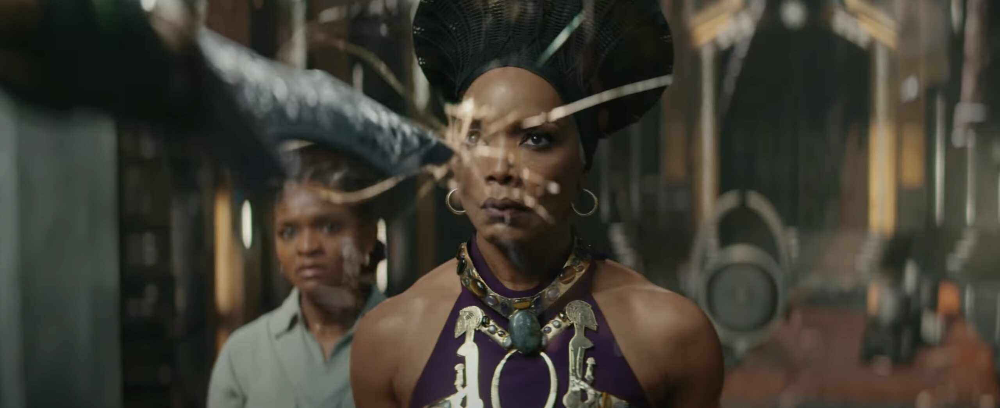

Mission: Impossible – Dead Reckoning Part One
The train fight was amazing.

Black Panther: Wakanda Forever
Queen Ramonda sacrificed her life to protect the MIT student Riri Williams.
Avengers: Endgame
Iron Man sacrificed himself to save the world.